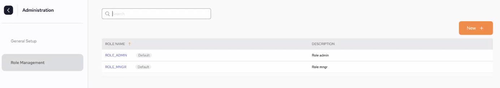
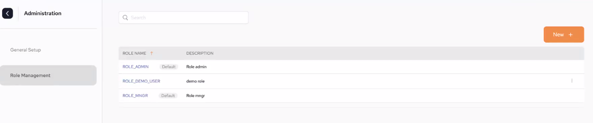

If a user is defined as an Admin, the Administration options can be accessed via the cog at the bottom left hand corner.
.
Populate the Connection fields in order to configure SSO. Once they are populated, click Apply.

Provider type – The protocol the IDP supports. Currently
Provider id – This is a generic ID that will be used as a name for the auth-config creator.
Redirect URIs – Upon successful sign-in, this endpoing in our server will receive the data from the IDP,
Issue URL – URL of the IDP issuer. For example, Okta, JumpCloud, AWS, Github.
Client Id – Unlike the Provider ID, this ID serves as a unique identifier which the IDP generates to the user so they can identify with it,
Client Secret – This is a secret key that is used with the Client ID in order to improve security.
Authorization Grant Type – Each IDP has rules regarding how roles are grouped. These rules have an arbitrary name provided by the IDP. The roles user must use this name to create the roles.
Once the connection details are entered, click Apply.
Each role that is configured will have certain roles assigned to it.
There are two default roles that are included with the installation which cannot be edited: ROLE_ADMIN and ROLE_MNGR.
To see which roles are applied to them, click on the role.

Create a new role by clicking New + to access the role setup page.
On the setup page:
Provide a name for the new role. In our example it is ROLE_DEMO_USER.
Provide a description of the role.
Select which permissions the role should have by selecting from the list and using the right-arrow to move the role into the list on the right.
Click Apply

Once apply is click the following screen is displayed, where you can see the new role has now been added.

List of Roles:
TBD